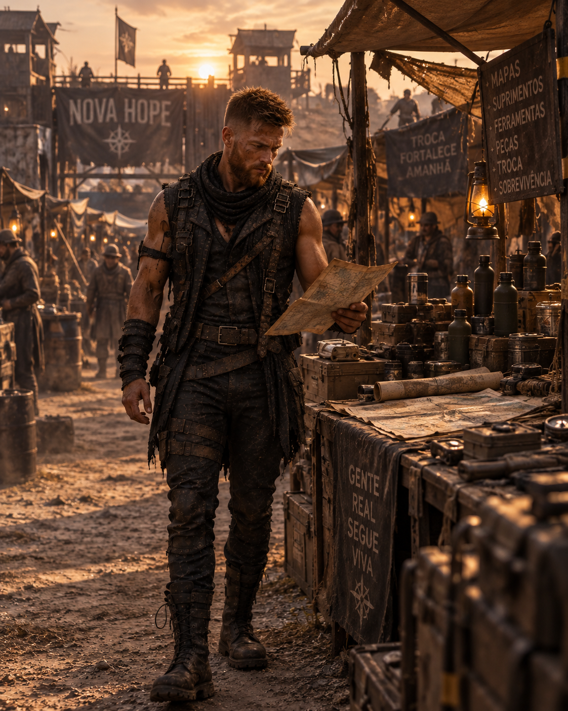
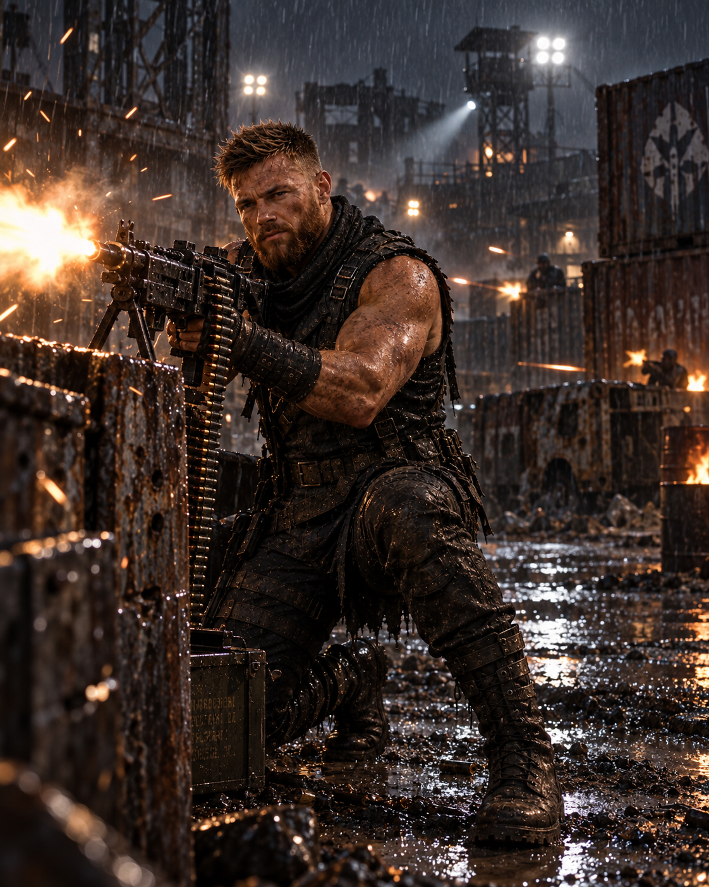
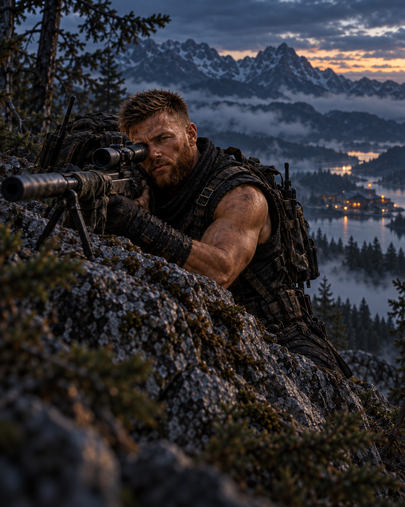

O alvo aparece
antes do disparo.
Treinado para manter a calma quando todos já perderam a direção, Nathan cobre as rotas enquanto Pollyanna abre caminho. Não são a mesma pessoa — são a mesma frente.
Distância
e precisão.


